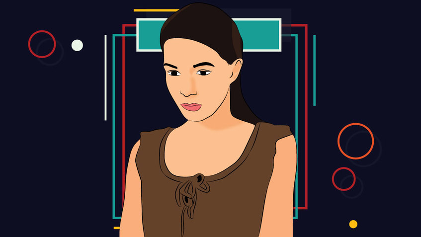

Tipe-tipe Temprament Manusia Melankolis, Kolreis, Sanguinis dan Plegmatis
1. Sanguinis
Orang dengan tipe kepribadian sanguinis cenderung hidup, optimis, ringan, dan riang. Tipe ini juga menyukai petualangan dan memiliki toleransi tinggi akan risiko. Selain itu, tipe sanguin biasanya lemah dalam menoleransi kebosanan, serta akan mencari variasi dan hiburan. Secara alami, sifat ini kadang-kadang negatif dalam memengaruhi hubungan percintaan dan lainnya.
Karena kepribadian ini berperilaku mencari kesenangan, banyak orang dengan kepribadian sanguinis cenderung berjuang dengan kecanduan (ingin suatu hal dengan terus-menerus).
Orang sanguin juga dikenal sangat kreatif dan bisa menjadi seniman serta penghibur yang hebat dan akan berhasil jika memilih karier di industri hiburan. Kemampuan alami orang sanguinis sangat cocok jika memilih pekerjaan yang berhubungan dengan marketing, travel, fashion, memasak/kuliner, atau olahraga.
2. Plegmatis
Seseorang dengan kepribadian plegmatis biasanya adalah orang-orang yang cinta damai. Tipe ini biasanya mencari keharmonisan antar-pribadi dan hubungan dekat yang membuat orang-orang plegmatis menjadi pasangan yang setia dan orang tua yang penuh kasih.
Orang-orang plegmatis suka menjaga hubungan dengan teman-teman lama, anggota keluarga yang jauh, dan tetangga. Dalam hal kepribadian, tipe plegmatis cenderung menghindari konflik dan selalu berusaha menengahi orang lain untuk memulihkan perdamaian dan harmoni.
Plegmatis juga sangat suka beramal dan membantu orang lain. Karier yang ideal untuk tipe kepribadian plegmatis antara lain perawat, guru, psikolog, konseling, atau layanan sosial
3. koleris
Seseorang dengan kepribadian koleris biasanya orang yang sangat berorientasi pada tujuan. Orang yang koleris terkenal sangat cerdas, analitis, dan logis, sangat praktis dan langsung, tetapi tipe ini tidak harus menjadi teman baik atau orang yang ramah.
Seorang koleris tidak menyukai pembicaraan singkat dan menikmati percakapan yang mendalam dan bermakna. Mereka lebih suka sendirian daripada di perusahaan dengan orang berkepribadian lemah.
Idealnya, tipe ini suka menghabiskan waktu bersama orang-orang yang memiliki minat profesional yang serupa. Pekerjaan ideal untuk seorang koleris terkait dengan industri tentang pengelolaan, teknologi, statistik, teknik, dan pemrograman
4. Melankolis
Orang-orang dengan kepribadian melankolis menyukai tradisi. Misalnya wanita memasak untuk laki-laki, laki-laki membuka pintu bagi wanita. Tipe melankolis rata-rata mencintai keluarga dan teman-temannya, tidak seperti orang-orang sanguinis. Melankolis tidak suka mencari hal-hal baru dan petualangan dan bahkan cenderung akan sangat menghindarinya.
Seseorang dengan kepribadian melankolis tidak mungkin menikah dengan orang asing atau meninggalkan tanah airnya ke negara lain. Orang yang melankolis juga dikenal sangat sosial dan berupaya berkontribusi pada komunitas, sangat teliti dan akurat. Tipe ini adalah manajer yang fantastis dengan kepribadian yang baik.
Karier yang sempurna untuk tipe kepribadian melankolis antara lain dalam bidang pengelolaan/ manajemen, akuntansi, pekerjaan social, atau bagian administrasi.
Nah itu dia teman-teman penjelasan mengenai Sanguinis, Koleris, Plegmatis, dan Melankolis. Kalau kalian yang mana ya?
Setelah kalian baca artikel diatas kira kira kalian sudah tau belom kalian menonjolkan kepribadian yang mana?Kalau belum yuk bisa di coba cari tahu dengan memencet tombol di bawah ini!
Test Tipe Temprament Sanguinis, Melankolis, Koleris, dan Plegmatis
Aturan testnya : pilih 1 untuk a, pilih 2 untuk b,pilih 3 untuk c, pilih 4 untuk d
1.Suatu saat kamu diajak makan direstoran oleh teman-temanmu, ketika memilih menu makanan apa yang kamu lakukan?
A.Terserah yang penting enak
B.Minta di jelasin tiap menunya
C.Apapun makanannya yang penting kumpul
D.Pilih menu termahal
2.Suatu saat kamu pergi keluar kota, pas waktu makakn siang kamu lapar dan mencari tempat makan, tempat mana yang kamu cari?
A.Langganan
B.Survey dulu di internet
C.Murah dan enak
D.Coba tempat baru
3.Apa yang kamu lakukan jika ada janji?
A.Suka telat
B.Tepat waktu
C.Lupa kalau ada janji
Datang sebelum waktunya
4.Baju mana yang merupakan kesukaanmu?
A.Bebas
B.Rapi
C.Warna menonjol
D.Polos/1 warna
5.Musik yang mana merupakan kesukaanmu?
A.Musik santai
B.Musik sedih
C.Musik semangat
D.Musik keras
6.Jika kamu baru membeli barang baru, apa yang kamu biasa lakukan?
A.Biasa aja
B.Menjaga sepenuh hati
C.Pamer
D.Manfaatkan secara maximal
7.Mana hobi yang masih relevan menurut kamu?
A,Main catur
B.Membaca buku
C.Bernyani
D.Olah raga
8.Bagaimana jika kamu akan mengungkapkan sesuatu ke orang lain?
A.Sungkan
B.Pikir matang matang
C.Ceplas-ceplos
D.Blak blakan
9.Cita-cita mana yang masih relevan dengan kamu?
A.Jadi dosen
B.Penulis
C.Artis
D.President
10.Dari beberapa hal mana yang kamu takuti?
A.Keluar dari zona nyaman
B.Dikritik
C.Ditolak
A.Dimanfaatkan
11.Dari hal berikut, yang mana yang merupakan prioritasmu?
A>Menghindari konflik
B.Kesempurnaan
C.Kebersamaan
D.Target
12.Jika kamu bertemu musuh yang kamu benci, dan kamu di tantang berkelahi, apa yang kamu lakukan?
A.Ajak damai
B.Kabur
C.Hanya bisa berteriak
D.Berkelahi
Kritera test ini adalah untuk mencari tahu tipe temprament kamu, cara penilaian adalah jika nilai kamu diatas 12 maka kamu seorang plegmatis, jika nilai kamu diatas diatas 21 maka kamu seorang Melankolis, jika nilai kamu 31 maka kami seorang Sanguinis, jika nilai kamu diatas 41 maka kamu seorang Koleris. Cukup mudah dimengerti kan


Popular Post